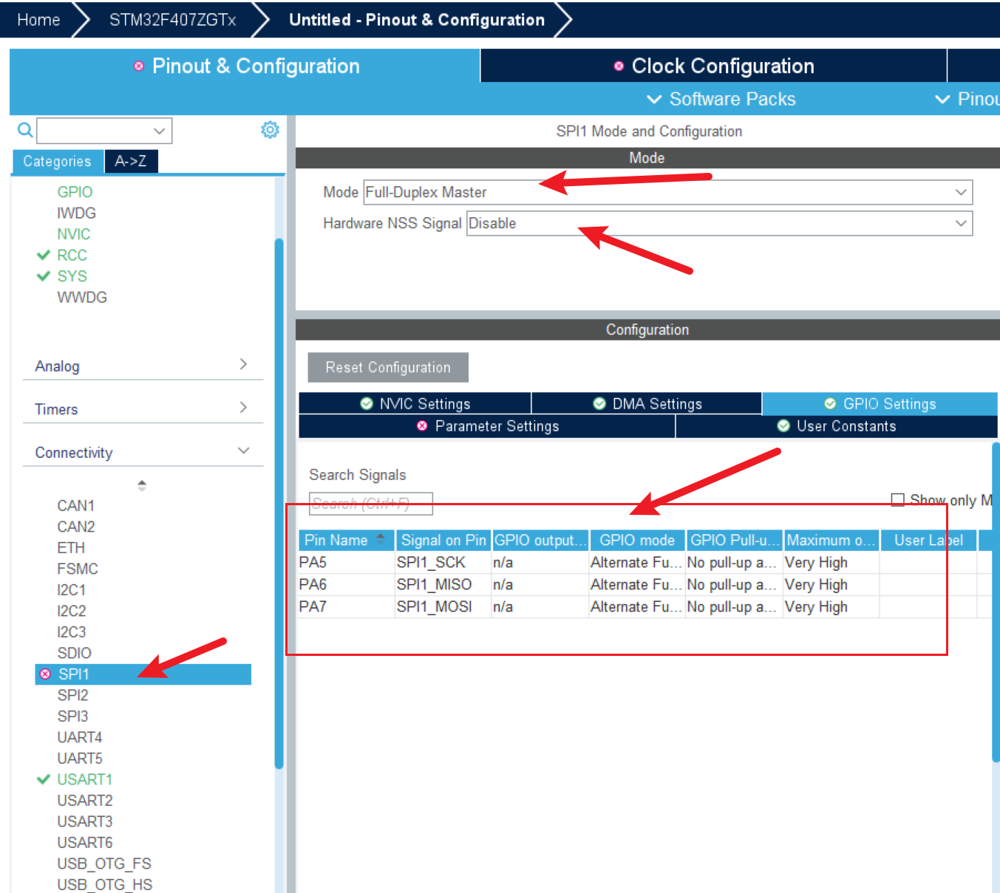
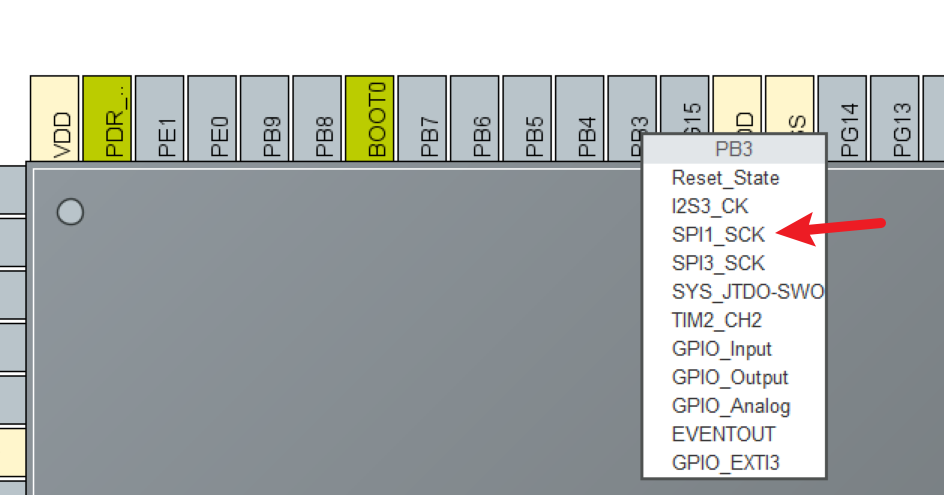
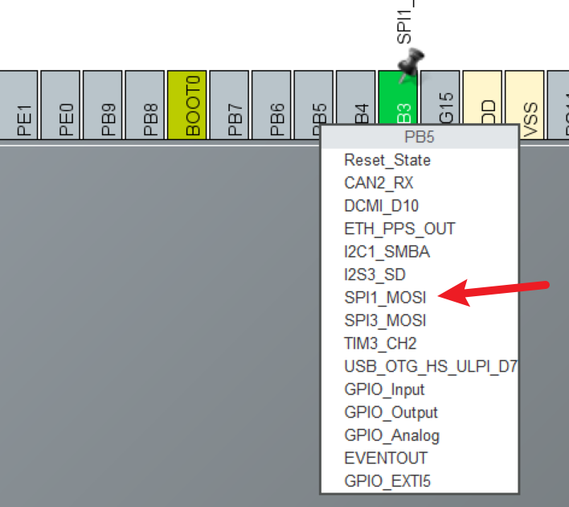
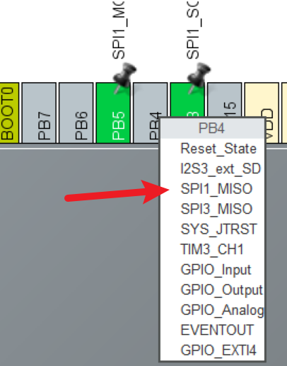
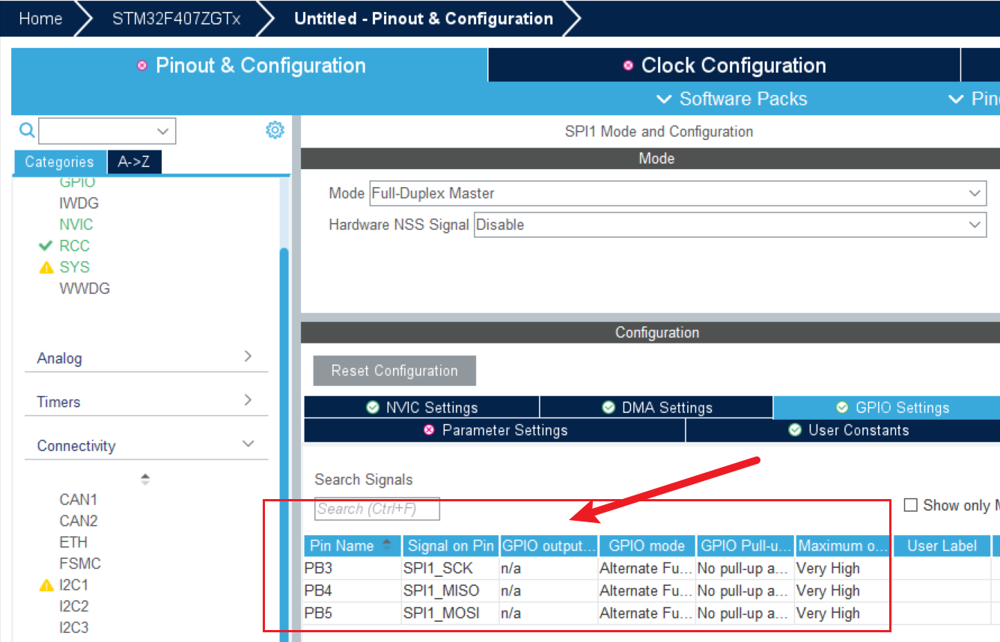
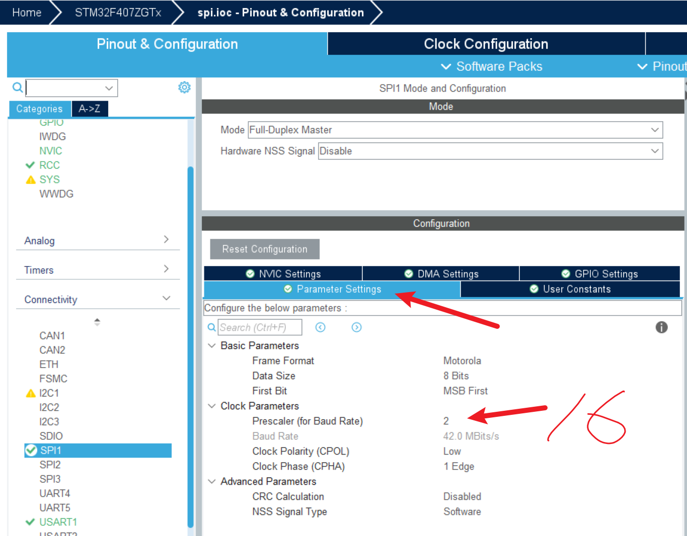

<!DOCTYPE lake>
<h2 data-lake-id="RJHu4" id="RJHu4"><span data-lake-id="u235391b5" id="u235391b5">学习目标</span></h2><ol list="u8ce6b675"><li data-lake-id="uf5f09f01" fid="ub3076963" id="uf5f09f01"><span data-lake-id="u31a9a7e4" id="u31a9a7e4">掌握SPI配置方式</span></li><li data-lake-id="ub875b642" fid="ub3076963" id="ub875b642"><span data-lake-id="u263a62d6" id="u263a62d6">掌握SPI读写操作</span></li></ol><h2 data-lake-id="GCeV3" id="GCeV3"><span data-lake-id="u577c75f0" id="u577c75f0">学习内容</span></h2><h3 data-lake-id="w2yGY" id="w2yGY"><span data-lake-id="ua8ad8c0b" id="ua8ad8c0b">需求</span></h3><p data-lake-id="ud4297413" id="ud4297413"></p><h3 data-lake-id="I5jDh" id="I5jDh"><span data-lake-id="u79fc268a" id="u79fc268a">SPI配置</span></h3><p data-lake-id="u611eabc2" id="u611eabc2"><span data-lake-id="u83cf5042" id="u83cf5042">打开</span><code data-lake-id="u099d73a0" id="u099d73a0"><span data-lake-id="u1a4ddd2f" id="u1a4ddd2f">SPI1</span></code><span data-lake-id="u49473adb" id="u49473adb">,选中全双工模式。观察下方自动生成的引脚，是否和自己开发板引脚对应。</span></p><p data-lake-id="uc5d06d78" id="uc5d06d78"></p><p data-lake-id="u18d4c82c" id="u18d4c82c"><span data-lake-id="ub0dea3f4" id="ub0dea3f4">修改引脚，来动右侧芯片引脚视图，找到开发板对应引脚，进行修改。</span></p><p data-lake-id="u563c161f" id="u563c161f"></p><p data-lake-id="ub21cefc9" id="ub21cefc9"></p><p data-lake-id="ua421d10b" id="ua421d10b"></p><p data-lake-id="u9a087c1f" id="u9a087c1f"><span data-lake-id="u5c1e268b" id="u5c1e268b">观察修改后的引脚，是否和开发板对应：</span></p><p data-lake-id="u26c162eb" id="u26c162eb"></p><p data-lake-id="ubb8f5114" id="ubb8f5114"><span data-lake-id="u676efc41" id="u676efc41">修改SPI参数，目前当前业务只需要修改速率，通过修改分频得到。</span></p><p data-lake-id="uf9e308ea" id="uf9e308ea"></p><h3 data-lake-id="uIwQp" id="uIwQp"><span data-lake-id="u600a2290" id="u600a2290">SPI编码</span></h3><h4 data-lake-id="TpIEO" id="TpIEO"><span data-lake-id="u37e23397" id="u37e23397">OLED驱动拷贝</span></h4><p data-lake-id="u9f2ac537" id="u9f2ac537"><span data-lake-id="ud120aea4" id="ud120aea4">将原有OLED驱动拷贝到项目中</span></p><h4 data-lake-id="kn70S" id="kn70S"><span data-lake-id="ube6ed0ac" id="ube6ed0ac">OLED的GPIO初始化修改</span></h4><span class="yuque-card-unsupported">[codeblock]</span><span class="yuque-card-unsupported">[codeblock]</span><ul list="uc14c1ac0"><li data-lake-id="ud6a83648" fid="uac8e080e" id="ud6a83648"><span data-lake-id="ua1432d01" id="ua1432d01">将引入改为</span><code data-lake-id="ud35dfbb3" id="ud35dfbb3"><span data-lake-id="ucf786286" id="ucf786286">#include "stm32f4xx_hal.h"</span></code></li><li data-lake-id="u692410b2" fid="uac8e080e" id="u692410b2"><span data-lake-id="u985c94ef" id="u985c94ef">引入生成的</span><code data-lake-id="u6e8e6385" id="u6e8e6385"><span data-lake-id="uf4308f77" id="uf4308f77">spi.h</span></code></li></ul><h4 data-lake-id="cgbGP" id="cgbGP"><span data-lake-id="u001b21b7" id="u001b21b7">实现SPI的读写</span></h4><p data-lake-id="u7ff68d06" id="u7ff68d06"><span data-lake-id="ud25cec1b" id="ud25cec1b">定义头</span></p><span class="yuque-card-unsupported">[codeblock]</span><p data-lake-id="ub20f45c7" id="ub20f45c7"><span data-lake-id="ued94c798" id="ued94c798">实现spi读写</span></p><span class="yuque-card-unsupported">[codeblock]</span><p data-lake-id="uf5fadcb7" id="uf5fadcb7"><br/></p><h2 data-lake-id="hPCQV" id="hPCQV"><span data-lake-id="u5c0bf392" id="u5c0bf392">练习</span></h2><ol list="ud157fb3e"><li data-lake-id="uf2895730" fid="u26a822fb" id="uf2895730"><span data-lake-id="u0a5fc909" id="u0a5fc909">使用HAL库点亮屏幕</span></li></ol>